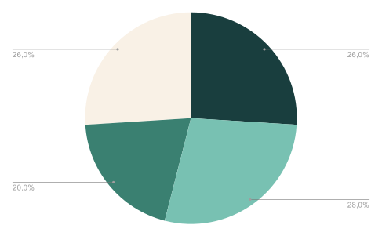
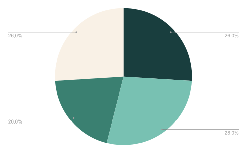

Currently I live with...
About 62% live with their parents, only 16% live alone, and the other 16% live with their partners, siblings, or relatives.
Yuca is a housing-as-a-service startup. Our mission is to revolutionize the lives of those living in the city, and to achieve this, we offer uncomplicated rentals with apartments ready to move in.
To solve the problem, Design Thinking was chosen. Following the steps of discover, define, develop, and deliver. In the process, the Double Diamond was used to align deliveries.
Discover why young people are not opting for coliving.
G1 - Economics "The influx to large cities continues to grow, leading to rising property prices and demand for more affordable housing."

Estadão "Low cost and social contact boost colivings in São Paulo (...) After evasion in the first months of the pandemic, shared space ventures attract residents wishing to meet people again."

Estadão Imóveis "The feeling of loneliness increased greatly during the pandemic, and space-sharing formats like coliving came to supply the side of solitary living that apartments offer."
About 62% live with their parents, only 16% live alone, and the other 16% live with their partners, siblings, or relatives.

These hassles are something already included in the Yuca support package, but few people know about it.

Here we sought to see the price perception of Coliving. Score 1 for cheap and score 5 for expensive.


A good part of the interviewees believe it is not so relevant to live in the city center. While only 18% consider it very important.

About 46% would agree to live in a coliving even with some concerns like rules and shared spaces being something recent.
 

For the qualitative research, I sought people who were similar to the personas. I also looked for people who were looking to leave home or wanting to move cities. Using a structured questionnaire, it was possible to reach the results below.

28 years old - Marketer
"I want to live in São Paulo, but I still need to plan to achieve this goal."
"Yes! I agreed with my girlfriend but it's complicated, I tried to encourage 2 more friends of mine too."
"I think coliving would be perfect to understand more what it's like to live (even temporarily) in a different city."

27 years old - Student
"I wanted to leave home soon, but I still don't have financial stability."
"I would probably live with my friends. Living alone nowadays is bad, mostly because of the price of everything."
"I had already heard about coliving, and even had a friend who lived for a while (...), but the rules were very strict."
After refining needs and pains, qualitative research clearly showed the real needs of our audience. It was possible to reach this result:
To go beyond demographic data and build a real connection with the user, we created an Empathy Map. Below, we detail what our persona Thinks and Feels, Sees, Hears, Says, and Does. This exercise was fundamental to guide the design in an empathic way and focused on solving their main problems.


After gathering a significant amount of data and ideas, it was essential to apply a Prioritization Grid. This tool allowed us to evaluate and classify the identified features and problems based on two main criteria: user impact and implementation complexity. In this way, we could focus on the most critical points with the highest value for the project, ensuring efficient development directed at real user needs.

Based on the research, we can create our first steps in UI with the processes below:


To ensure consistency, alignment, and a fluid user experience across all platforms, the design was built on a flexible grid system. We adopted a 12-column layout for desktop, adapting to 8 columns on tablets and 4 columns on mobile devices, ensuring that content is always organized and readable. All spacing was based on an 8pt grid, ensuring rhythm and visual harmony between components.

The process began with the creation of low-fidelity wireframes to structure information and define the main navigation flow. The focus at this stage was purely on functionality and content hierarchy, without visual distractions.


Below are the main visual components that define the project's identity, built with code. Hover over the buttons to see the effects.
Gilroy
Headline 1 - 60px
Headline 2 - 48px
Headline 3 - 36px
Headline 4 - 24px
#001716
#09AD70
#742794
#FF650E
Evolving from the low-fidelity structure, high-fidelity wireframes apply the complete visual layer of the project. Here, colors, fonts, icons, and components are integrated to accurately simulate the final user experience, validating the design and preparing for development.
If you have an idea, a job opportunity, or just want to chat, send me a message.


{kind=link}